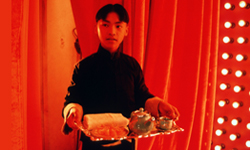
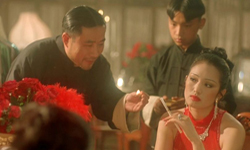
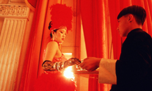
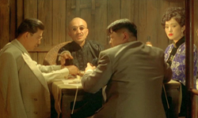
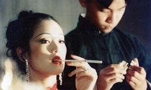
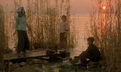
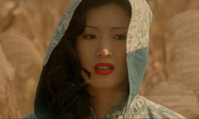
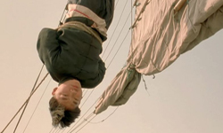
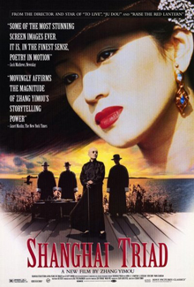

The film is based on the novel "Rules of a Clan" by Li Xiao and takes place in 1930s Shanghai, over the span of seven days. Shanghai Triad's Chinese title reads "Row, row, row to Grandma Bridge", and refers to a well known traditional Chinese lullaby. The story is viewed through the perspective of Tang, the 14-year-old nephew of a triad member, who has just arrived in the city to "work" in the same gang as his uncle. Through a series of unfortunate events, he ends up serving Xiao Jinbao, a cabaret singer and mistress of the boss, who also carries an affair with the number two man in the triad, Song. As the gang warfare reaches its apogee, the true level of the triads’ infiltration in the city is revealed, with the police and the politicians being part of the game. Tang finds himself inside a world of violence and treacheries, where money and the thirst for power is everything.


Shanghai Triad was director Zhang Yimou's seventh feature film. Zhang's previous film, To Live, had landed the director in trouble with Chinese authorities, and he was temporarily banned from making any films funded from overseas sources. Shanghai Triad was therefore only allowed to continue production after it was officially categorised as local production. The director has since noted that his selection of Shanghai Triad to follow up the previous politically controversial film was no accident, as he hoped that a "gangster movie" would be a conventional film.



The film was the last collaboration between Zhang Yimou and actress Gong Li in the 1990s, thus ending a successful partnership that had begun with Zhang's debut, Red Sorghum, and had evolved into a romantic relationship as well. With the wrapping of filming for Shanghai Triad the two agreed to end their relationship both professionally and personally. Gong Li and Zhang Yimou would not work together again until 2006's Curse of the Golden Flower.
